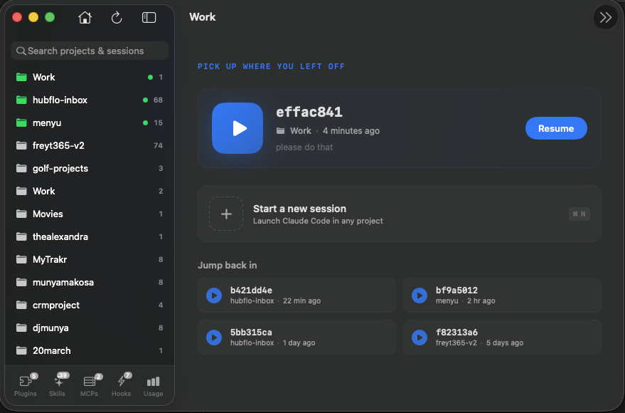

Never lose your place: claude continue and claude resume
Two built-in flags that turn Claude Code sessions into persistent workstreams. The version of this workflow I wish someone had shown me on day one.
You closed the terminal at 6pm.
You open it at 9am.
You type claude. Fresh session.
Gone. Yesterday's rabbit hole, the files it read, the approach you'd half-decided on. You re-explain everything. Ten minutes burned before your first real prompt.
This gets fixed in two flags.
claude --continue # pick up the most recent conversation
claude --resume # pick from all recent conversations
That's it. Claude Code saves every conversation locally. These two flags let you re-enter any of them with full context.
Used well, they turn your sessions into something closer to git branches for your thinking. Parallel workstreams you can hop between without losing state.
Most devs never use them. Start here.
--continue: resume the last conversation
Use this when you're coming back to the same thing.
Same project, same task, same train of thought. Step away for lunch, a meeting, a night's sleep. Come back.
cd ~/Projects/my-app
claude --continue
Claude reloads the last conversation for that directory. Messages, file reads, decisions. You pick up mid-sentence.
This is the flag you'll reach for 80% of the time.
--resume: pick from your history
Use this when you have multiple things running.
Debugging A. Building B. Refactoring C. You need to jump into a specific one, not just the most recent.
claude --resume
A picker lists your recent sessions with slugs and last activity. Arrow keys. Enter. You're back in that exact conversation with full context intact.
This is the flag that scales you past one task at a time.
Name your sessions like branches
Inside any session, run:
/rename oauth-migration
That session is now oauth-migration in the picker. Treat the name like a git branch. Short, purposeful, names the workstream.
Anthropic's own docs put it directly:
Treat sessions like branches: different workstreams can have separate, persistent contexts.
You wouldn't develop everything on main. Don't run every Claude conversation in one thread either.
When to use which
| Situation | Use |
|---|---|
| Continuing today what you started yesterday | --continue |
| "Which session had the auth bug?" | --resume |
| Multiple workstreams in parallel | --resume + /rename |
| Starting genuinely fresh work | neither, just claude |
| The last session went off the rails | neither, just claude |
That last row matters most. Resume carries everything. Dead ends, bad corrections, confused threads. If yesterday's conversation went sideways, a clean session with a better prompt beats resuming the mess.
Know when to ditch a session. It's a skill.
Do all of this in Work
The flags are great. But --resume tops out after about twenty sessions. No search, no preview beyond a slug, no way to peek before committing.
That's why I built Work. It reads the same ~/.claude/ files Claude writes, and turns every flag above into a click.
Continue where you left off → the Home screen shows a big feature card with your most recent session across all projects: name, project, last activity, token count, last message preview. One click resumes it. If that session is already running in a Terminal tab, Work focuses the existing tab instead of opening a new one.
Find any session → type in the sidebar search. Results show up as a flat list of sessions from every project, with message previews. Click play to resume. No project-by-project hunting.
Name a session → type a name in the "New Session" popover when you launch, and Work applies it automatically the moment the session appears. Or right-click any existing session → Rename. Names persist across launches and can be cleared anytime.
Ditch dead sessions → right-click → Hide. They disappear from the main list. A "Show hidden (N)" toolbar toggle brings them back if you need them.

Same flags underneath. Real interface on top.
But the app is optional.
The flags aren't.
--continue and --resume are the two commands every Claude Code user should know. Most don't. You do now.